Data visualization with ggplot2
Learning Objectives
- To be able to use ggplot2 to generate publication quality graphics
- To understand the basics of the grammar of graphics:
- The aesthetics layer
- The geometry layer
- Adding statistics
- Transforming scales
- Coloring or paneling by groups.
Plotting our data is one of the best ways to quickly explore it and the various relationships between variables.
There are three main plotting systems in R, the base plotting system, the lattice package, and the ggplot2 package.
Base plotting
R’s base (built-in) plotting functions are powerful and very flexible, but not overly user friendly. For simple exploratory plots that don’t need to look nice, they are useful. They are generally specified as plot(x, y, ...)
plot(gapminder$lifeExp, gapminder$gdpPercap)You can also specify them in a formula format plot(y ~ x, data='', ...)
plot(gdpPercap ~ lifeExp, data=gapminder)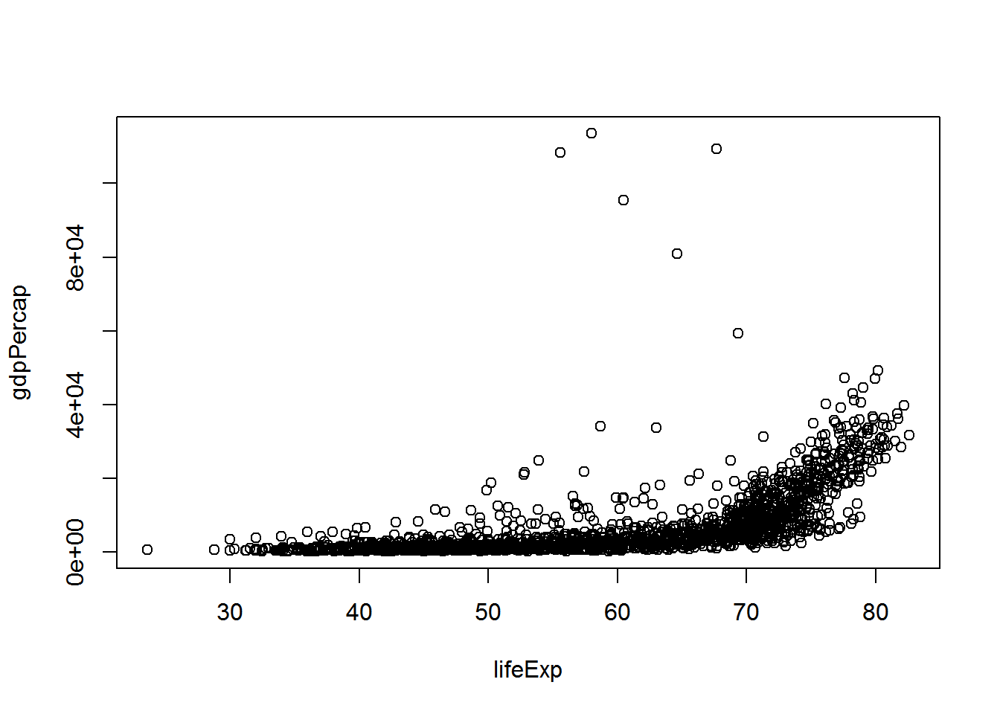
hist(gapminder$gdpPercap)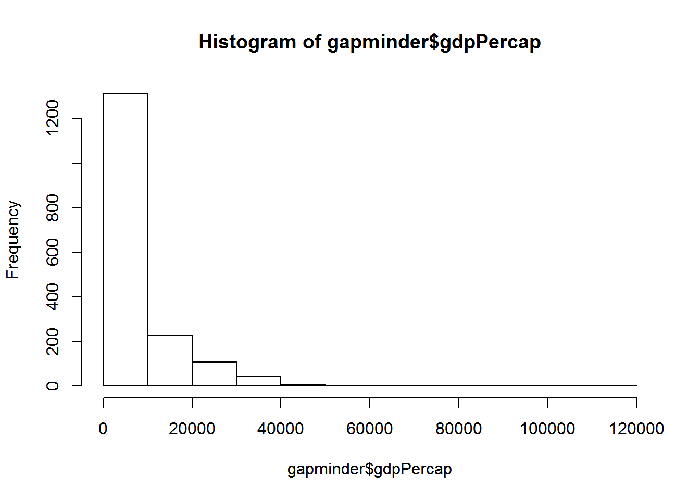
boxplot(gdpPercap ~ continent, data=gapminder)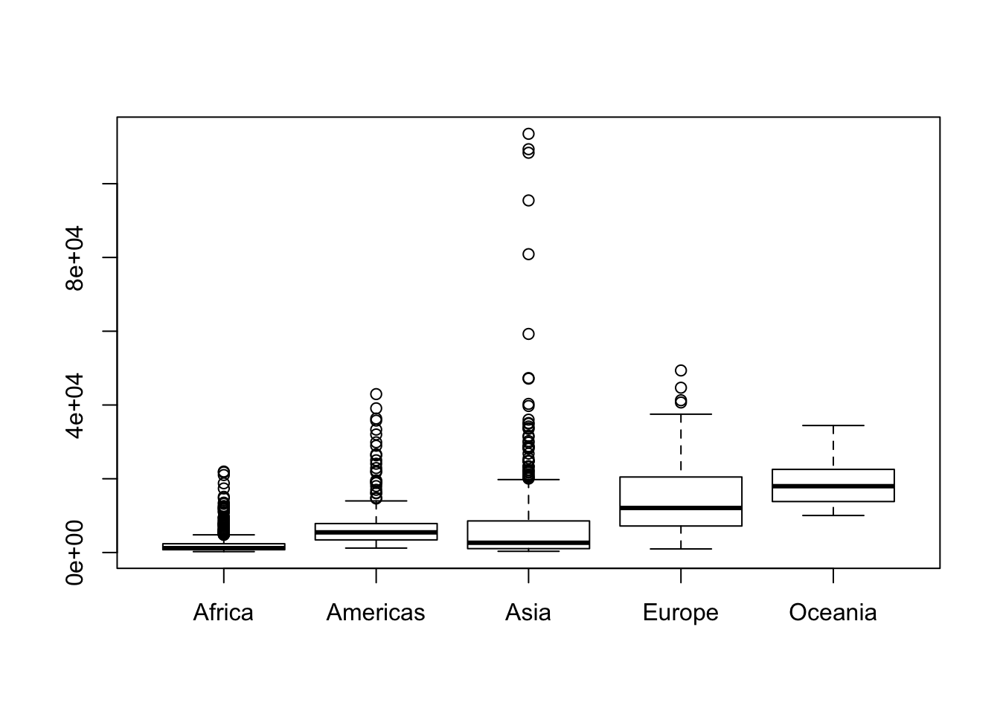
ggplot2
Today we’ll be learning about the ggplot2 package developed by Hadley Wickham, because it is the most effective for creating publication quality graphics.
ggplot2 and the Grammar of Graphics
The ggplot2 package provides an R implementation of Leland Wilkinson’s Grammar of Graphics (1999). The Grammar of Graphics challenges data analysts to think beyond the garden variety plot types (e.g. scatter-plot, barplot) and to consider the components that make up a plot or graphic, such as how data are represented on the plot (as lines, points, etc.), how variables are mapped to coordinates or plotting shape or colour, what transformation or statistical summary is required, and so on. Specifically, ggplot2 allows users to build a plot layer-by-layer by specifying:
- The data,
- some aesthetics, that map variables in the data to a visual representation on the plot. This tells ggplot2 how to show each variable, such as axes on the plot or to size, shape, color, etc.
- a geom, which specifies the geometry of how the data are represented on the plot (points, lines, bars, etc.),
- a stat, a statistical transformation or summary of the data applied prior to plotting,
- facets, that allow the data to be divided into chunks on the basis of other categorical or continuous variables and the same plot drawn for each chunk.
Because ggplot2 implements a layered grammar of graphics, data points and additional information (scatterplot smoothers, confidence bands, etc.) can be added to the plot via additional layers, each of which utilize further geoms, aesthetics, and stats.
Let’s start off with an example:
library(ggplot2)
ggplot(data = gapminder, aes(x = lifeExp, y = gdpPercap)) +
geom_point()So the first thing we do is call the ggplot function. This function lets R know that we’re creating a new plot, and any of the arguments we give the ggplot function are the global options for the plot: they apply to all layers on the plot.
We’ve passed in two arguments to ggplot. First, we tell ggplot what data we want to show on our figure, in this example the gapminder data we read in earlier. For the second argument we passed in the aes function, which tells ggplot how variables in the data map to aesthetic properties of the figure, in this case the x and y locations. Here we told ggplot we want to plot the “lifeExp” column of the gapminder data frame on the x-axis, and the “gdpPercap” column on the y-axis. Notice that we didn’t need to explicitly pass aes these columns (e.g. x = gapminder[, "lifeExp"]), this is because ggplot is smart enough to know to look in the data for that column!
By itself, the call to ggplot isn’t enough to draw a figure:
ggplot(data = gapminder, aes(x = lifeExp, y = gdpPercap))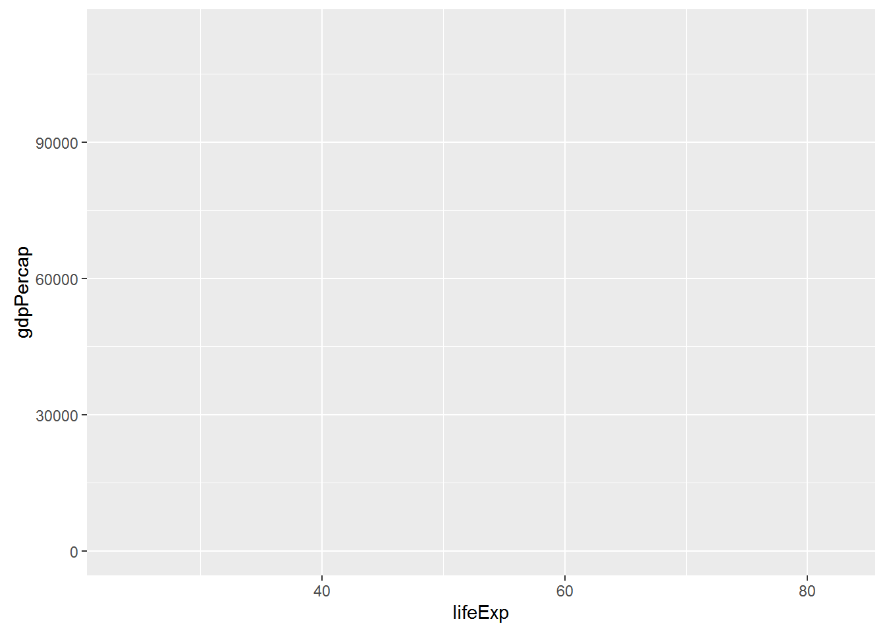
We need to tell ggplot how we want to visually represent the data, which we do by adding a new geom layer. In our example, we used geom_point, which tells ggplot we want to visually represent the relationship between x and y as a scatterplot of points:
ggplot(data = gapminder, aes(x = lifeExp, y = gdpPercap)) +
geom_point()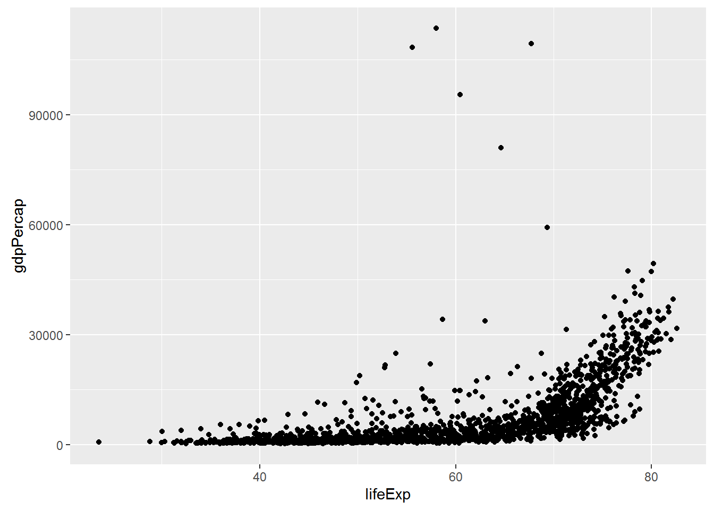
Challenge 1
Modify the example so that the figure visualise how life expectancy has changed over time:
ggplot(data = gapminder, aes(x = lifeExp, y = gdpPercap)) + geom_point()Hint: the gapminder dataset has a column called “year”, which should appear on the x-axis.
Challenge 2
In the previous examples and challenge we’ve used the
aesfunction to tell the scatterplot geom about the x and y locations of each point. Another aesthetic property we can modify is the point color. Modify the code from the previous challenge to color the points by the “continent” column. What trends do you see in the data? Are they what you expected?
Geom Layers
Using a scatterplot probably isn’t the best for visualising change over time. Instead, let’s tell ggplot to visualise the data as a line plot:
ggplot(data = gapminder, aes(x=year, y=lifeExp, by=country, color=continent)) +
geom_line()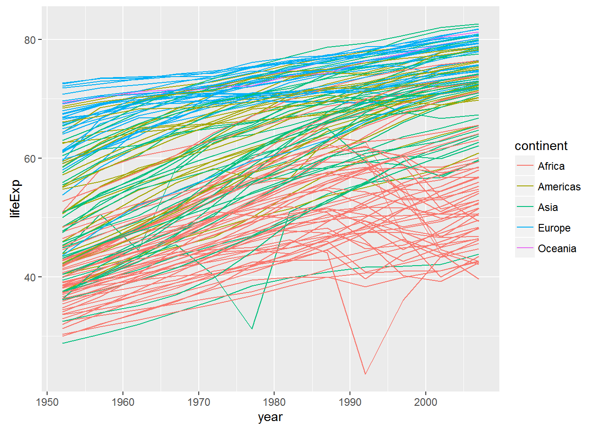
Instead of adding a geom_point layer, we’ve added a geom_line layer. We’ve added the by aesthetic, which tells ggplot to draw a line for each country.
But what if we want to visualise both lines and points on the plot? We can simply add another layer to the plot:
ggplot(data = gapminder, aes(x=year, y=lifeExp, by=country, color=continent)) +
geom_line() + geom_point()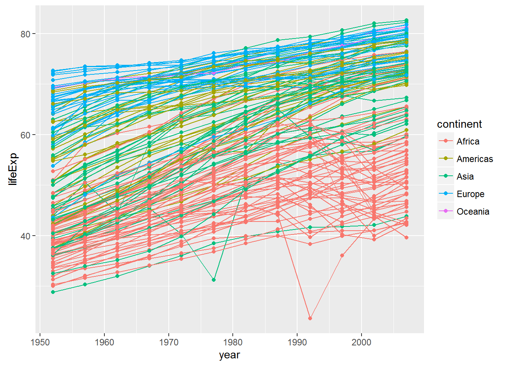
It’s important to note that each layer is drawn on top of the previous layer. In this example, the points have been drawn on top of the lines. Here’s a demonstration:
ggplot(data = gapminder, aes(x=year, y=lifeExp, by=country)) +
geom_line(aes(color=continent)) + geom_point()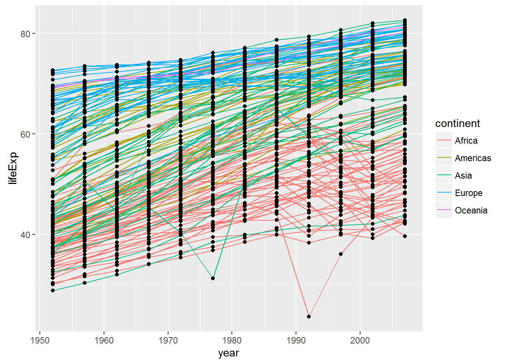
In this example, the aesthetic mapping of color has been moved from the global plot options in ggplot to the geom_line layer so it no longer applies to the points. Now we can clearly see that the points are drawn on top of the lines.
Challenge 3
Switch the order of the point and line layers from the previous example. What happened?
There are many other geoms we can use to explore the data. One common one is a histogram, so we can see the distribution of a single variable:
ggplot(gapminder, aes(x = gdpPercap)) + geom_histogram()## `stat_bin()` using `bins = 30`. Pick better value with `binwidth`.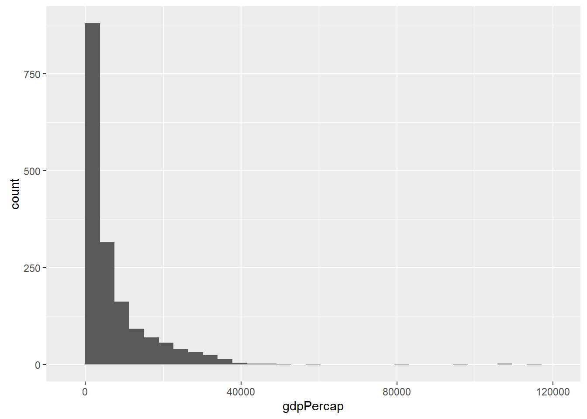
Or a boxplot to compare distribution of life expectancy across continents:
ggplot(gapminder, aes(x = continent, y = lifeExp)) + geom_boxplot()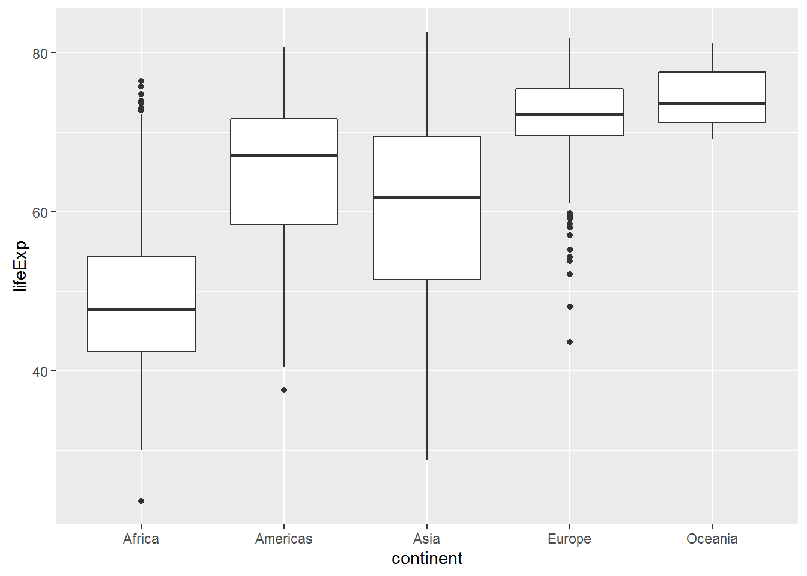
Transformations and statistics
ggplot also makes it easy to overlay statistical models over the data. To demonstrate we’ll go back to our first example:
ggplot(data = gapminder, aes(x = lifeExp, y = gdpPercap, color=continent)) +
geom_point()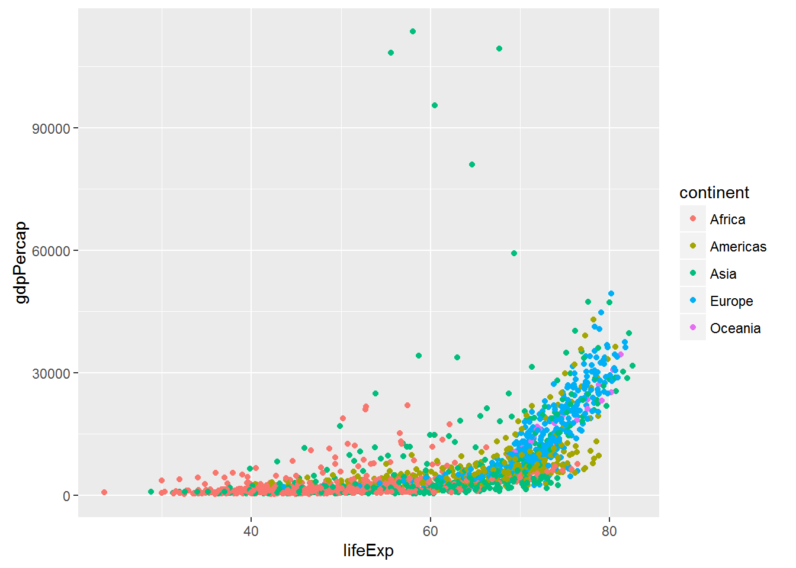
Currently it’s hard to see the relationship between the points due to some strong outliers in GDP per capita. We can change the scale of units on the y axis using the scale functions. These control the mapping between the data values and visual values of an aesthetic.
ggplot(data = gapminder, aes(x = lifeExp, y = gdpPercap)) +
geom_point() + scale_y_log10()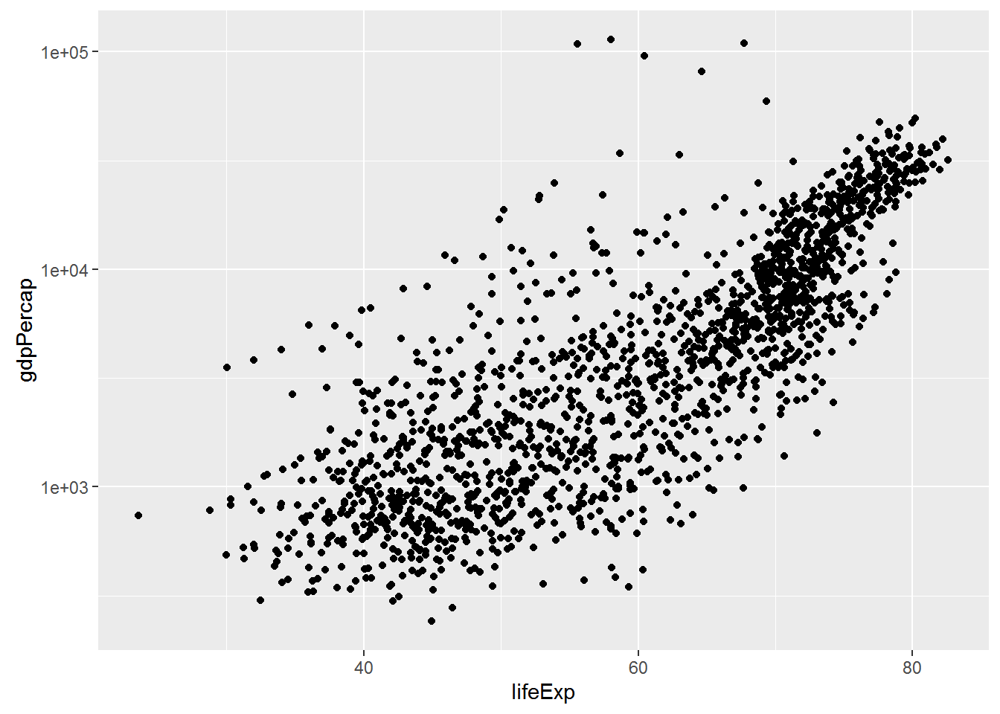
The log10 function applied a transformation to the values of the gdpPercap column before rendering them on the plot, so that each multiple of 10 now only corresponds to an increase in 1 on the transformed scale, e.g. a GDP per capita of 1,000 is now 3 on the y axis, a value of 10,000 corresponds to 4 on the y axis and so on. This makes it easier to visualise the spread of data on the y-axis.
We can fit a simple linear relationship to the data by adding another layer, geom_smooth:
ggplot(data = gapminder, aes(x = lifeExp, y = gdpPercap)) +
geom_point() + scale_y_log10() + geom_smooth(method="lm")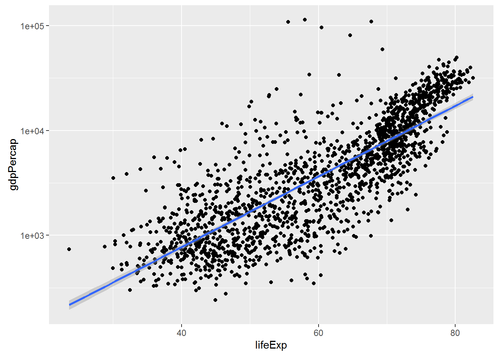
We can make the line thicker by setting the size aesthetic in the geom_smooth layer:
ggplot(data = gapminder, aes(x = lifeExp, y = gdpPercap)) +
geom_point() + scale_y_log10() + geom_smooth(method="lm", size=1.5)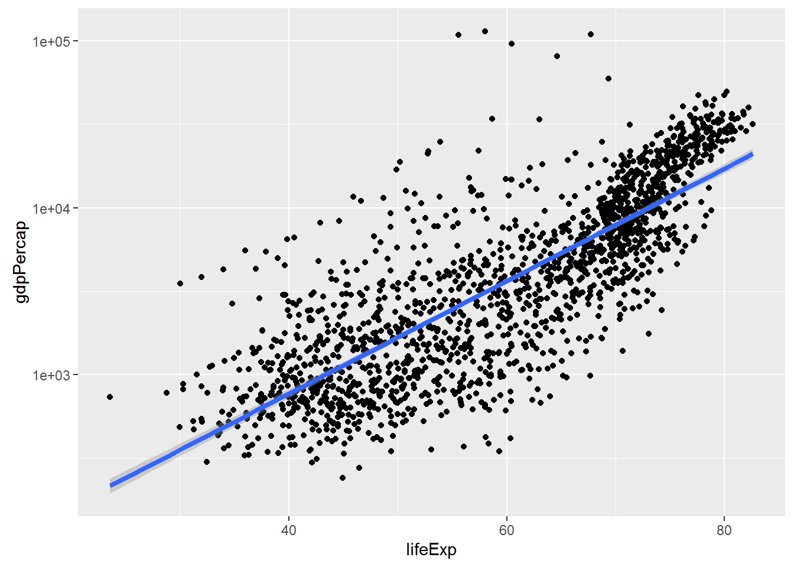
There are two ways an aesthetic can be specified. Here we set the size aesthetic by passing it as an argument to geom_smooth. Previously in the lesson we’ve used the aes function to define a mapping between data variables and their visual representation.
Challenge 4
Modify the color and size of the points on the point layer in the previous example.
Hint: do not use the
aesfunction.
Multi-panel figures
Earlier we visualised the change in life expectancy over time across all countries in one plot. Alternatively, we can split this out over multiple panels by adding a layer of facet panels:
ggplot(data = gapminder, aes(x = year, y = lifeExp, color=continent)) +
geom_line() + facet_wrap( ~ country)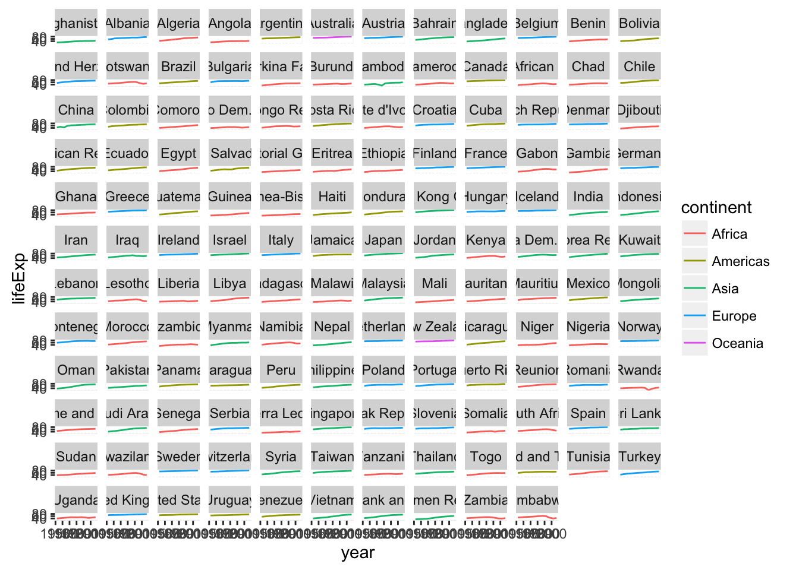
The facet_wrap layer took a “formula” as its argument, denoted by the tilde (~). This tells R to draw a panel for each unique value in the country column of the gapminder dataset.
Modifying text
To clean this figure up for a publication we need to change some of the text elements. The x-axis is way too cluttered, and the y axis should read “Life expectancy”, rather than the column name in the data frame.
We can do this by adding a couple of different layers. The theme layer controls the axis text, and overall text size, and there are special layers for changing the axis labels. To change the legend title, we need to use the scales layer.
ggplot(data = gapminder, aes(x = year, y = lifeExp, color=continent)) +
geom_line() + facet_wrap( ~ country) +
xlab("Year") + ylab("Life expectancy") + ggtitle("Figure 1") +
scale_fill_discrete(name="Continent") +
theme(axis.text.x=element_blank(), axis.ticks.x=element_blank())
This is just a taste of what you can do with ggplot2. RStudio provides a really useful cheat sheet of the different layers available, and more extensive documentation is available on the ggplot2 website. Finally, if you have no idea how to change something, a quick google search will usually send you to a relevant question and answer on Stack Overflow with reusable code to modify!
Challenge 5
Create a density plot of GDP per capita, filled by continent.
Advanced: - Transform the x axis to better visualise the data spread. - Add a facet layer to panel the density plots by year.
Further ggplot2 resources
- The official ggplot2 documentation
- The ggplot2 book, by the developer, Hadley Wickham
- The ggplot2 Google Group (mailing list, discussion forum).
- Intermediate Software Carpentry lesson on data visualization with ggplot2.
- A blog with a good number of posts describing how to reproduce various kind of plots using ggplot2.
- Thousands of questions and answers tagged with “ggplot2” on Stack Overflow, a programming Q&A site.
Challenge solutions
Solutions to challenges
Solution to challenge 1
Modify the example so that the figure visualise how life expectancy has changed over time:
ggplot(data = gapminder, aes(x = year, y = lifeExp)) + geom_point()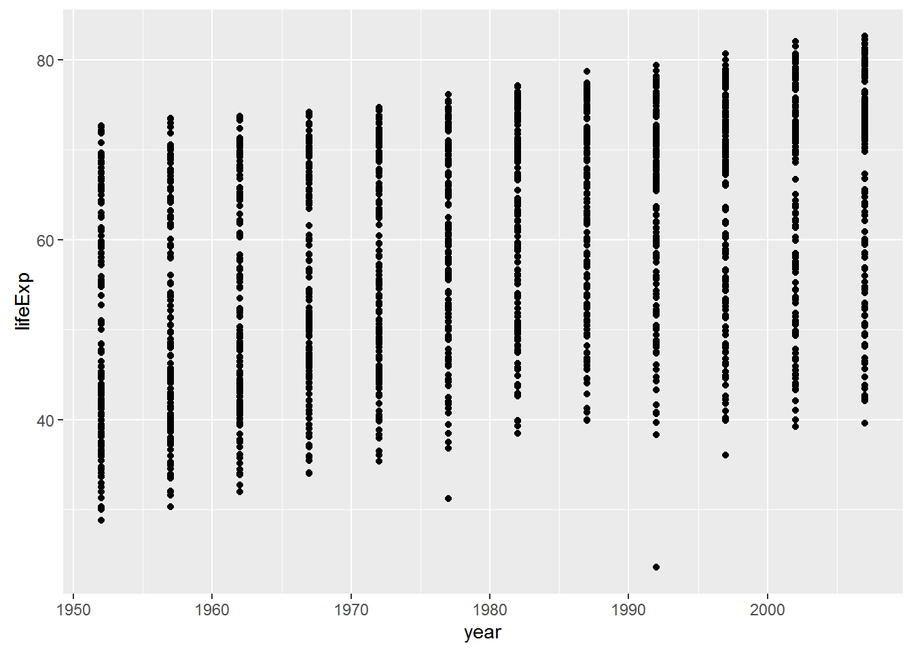
Solution to challenge 2
In the previous examples and challenge we’ve used the
aesfunction to tell the scatterplot geom about the x and y locations of each point. Another aesthetic property we can modify is the point color. Modify the code from the previous challenge to color the points by the “continent” column. What trends do you see in the data? Are they what you expected?ggplot(data = gapminder, aes(x = year, y = lifeExp, color=continent)) + geom_point()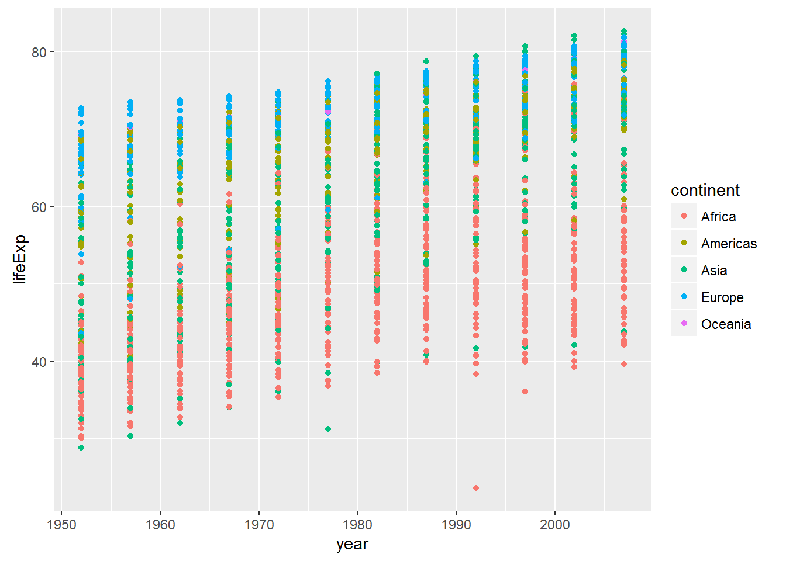
Solution to challenge 3
Switch the order of the point and line layers from the previous example. What happened?
ggplot(data = gapminder, aes(x=year, y=lifeExp, by=country)) + geom_point() + geom_line(aes(color=continent))The lines now get drawn over the points!
Solution to challenge 4
Modify the color and size of the points on the point layer in the previous example.
Hint: do not use the
aesfunction.ggplot(data = gapminder, aes(x = lifeExp, y = gdpPercap)) + geom_point(size=3, color="orange") + scale_y_log10() + geom_smooth(method="lm", size=1.5)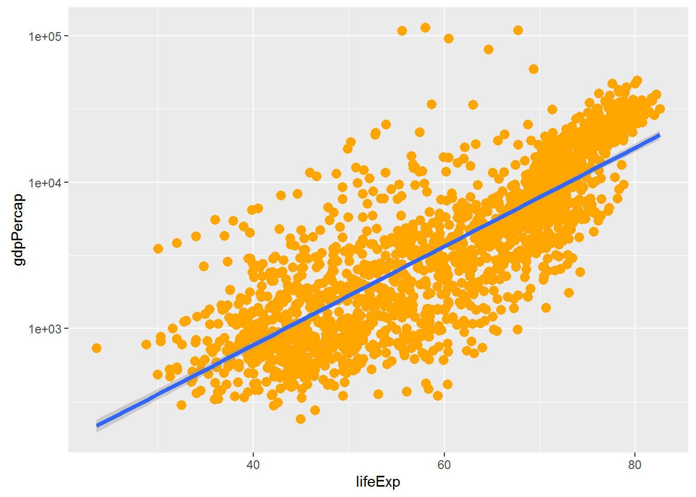
Solution to challenge 5
Create a density plot of GDP per capita, filled by continent.
Advanced: - Transform the x axis to better visualise the data spread. - Add a facet layer to panel the density plots by year.
ggplot(data = gapminder, aes(x = gdpPercap, fill=continent)) + geom_density(alpha=0.6) + facet_wrap( ~ year) + scale_x_log10()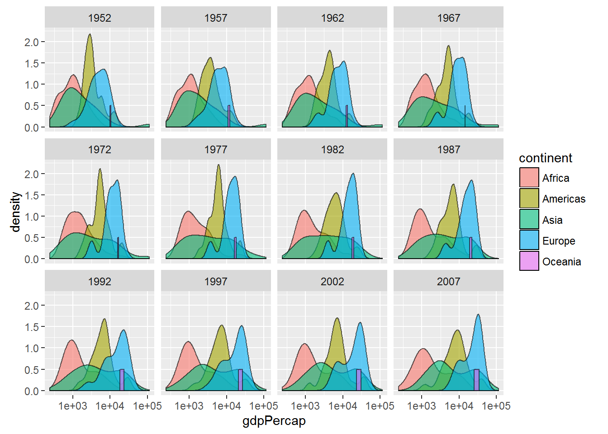